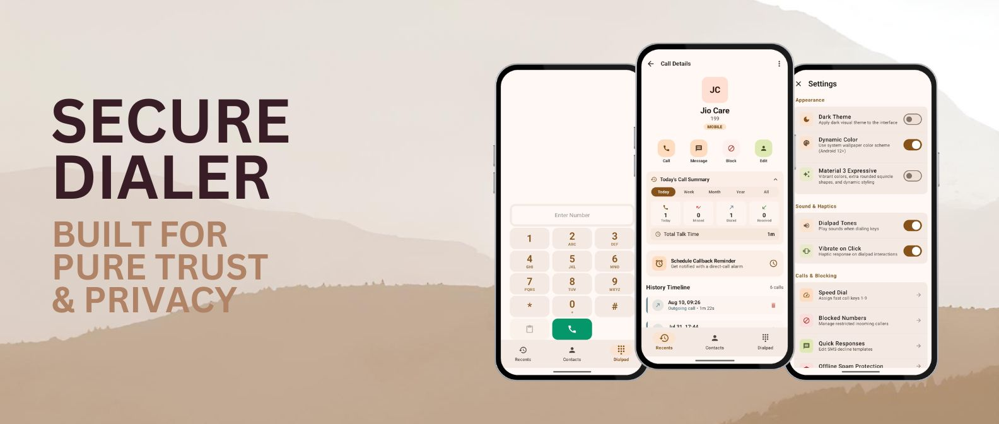
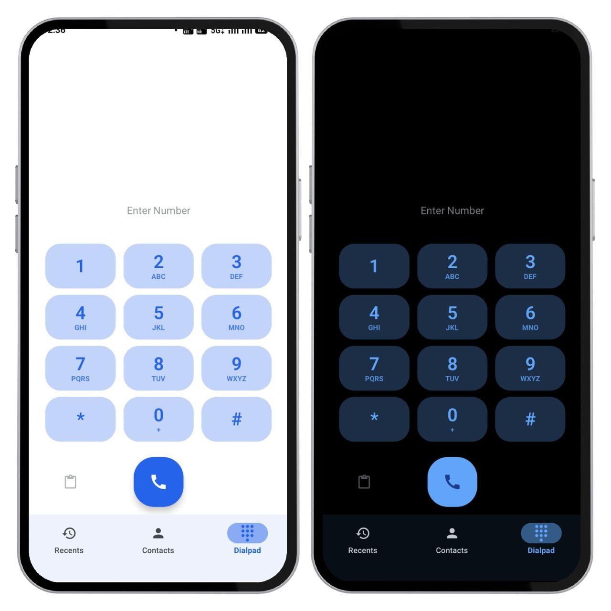

Tired of stock dialers that gather your calling statistics and send your personal contacts list to remote cloud servers? Secure Dialer processes absolutely everything locally. Zero internet permissions mean zero tracking, zero ads, and zero data leaks. Guaranteed.

Most dialers monetize your communication patterns and upload your address book. We believe privacy isn't a premium configuration setting—it must be the foundation of the architecture.
Secure Dialer physically excludes the Android INTERNET permission in its manifest. It has no physical way to connect to a server, retrieve tracking code, or upload metadata.
Settings, private call logs, custom templates, and speed dials are encrypted inside a local Room SQLCipher database. The database key is secured natively within the device's hardware-backed Android Keystore enclave.
No closed binary blobs or obfuscated background modules. Our entire codebase is licensed under the GPLv3, open for public audits, and compiles cleanly in secondary sandboxed environments like GrapheneOS.
Designed purely with Jetpack Compose following modern Material 3 guidelines. Enjoy custom shapes, dynamic typography, adaptive grid alignments, and absolute clarity.

Your primary hub for quick dialing, speed dials, and smart local directory matching. Real tactile response paired with hardware privacy guarantees.
Type numbers corresponding to names to search instantly. Highly responsive local algorithm matches contacts without remote database lookups.
Provides satisfying feedback vibration with real DTMF tone generation for easy navigation of corporate automated menu directories.
Assign keys 1 through 9 to trigger immediate calls to your most important contacts without navigating deep directories.
Designed with high functionality to replace all features of stock dialers while incorporating offline-first security utilities.
Silences telemarketers and fraud numbers using Android's native CallScreeningService. Blocklists are checked, imported via CSV, and managed completely offline.
Set custom delayed multi-call sequences that trigger a high-fidelity incoming caller UI screen. Answering simulates an active call with timer counters and dialpads to help escape awkward meetings.
Record conversations or write persistent encrypted notes directly inside the active call window. Audio is stored in the application's secure isolated local database sandboxed sandbox.
Decline an incoming call with text but forget to callback? Use callback reminders from call detail screens to establish delayed alerts containing immediate direct call-back actions.
Understand your dial patterns over days, weeks, or months. Displays structured duration trackers, missed counts, and top callers via clean native Compose charts that run entirely locally.
Supports seamless SIM selection prompts on active dial triggers, or configure standard primary outbound lines. T9 speed dial maps indices `1` to `9` to dial key numbers immediately.
A dialer app requires permissions to perform system calls. We explain exactly what we request, why we need it, and how your data remains completely insulated.
Why: To look up names, display avatars, and allow search.
Security Guarantee: Read completely in local process memory. Never synchronized or written to outside services.
Why: Allows adding names, numbers, emails, and notes to your storage directly inside the dialer.
Security Guarantee: Operates only via on-device system contacts provider.
Why: Placed in call triggers when clicking numbers or tapping dial icons.
Security Guarantee: Only sends commands directly to Android's Telecom subsystem.
Why: Populates the "Recents" list, detailing missed, received, or dialed connections.
Security Guarantee: Local read. No background scrapers or reporting routines.
Why: Sends standard decline templates (e.g., "Sorry, I am driving") directly on call rejection.
Security Guarantee: Initiates purely when manually confirmed by you during an inbound call.
Why: Allows voice tracking during calls if you tap the Record button.
Security Guarantee: Isolated local sandboxed storage. No background passive ear-dropping or wiretaps.
Build your own secure, signed APK using standard open source tools. Ensure absolute integrity.
# 1. Clone the repository
git clone https://github.com/Secure-Phone-apps/Secure-Dialer.git
cd Secure-Dialer
# 2. Verify dependencies and run tests
./gradlew testDebugUnitTest
# 3. Assemble release APK signed under your environment keys
./gradlew assembleDebug
# 4. Binary targets can be found under build directory:
app/build/outputs/apk/debug/app-debug.apkEverything you need to know about Secure Dialer's privacy controls, storage, and build setup.
android.permission.INTERNET permission is not even listed in its AndroidManifest.xml). Your contact list, call metrics, and dialer preferences reside physical on your device, completely sandboxed from any remote servers.
DatabaseKeyManager. This master key is generated with cryptographically strong SecureRandom and protected using hardware-backed Android KeyStore (using AES in GCM mode with no padding). Even on rooted devices, your private dialer database is safeguarded against unauthorized extractions.
InCallService (via MyInCallService.kt) and CallManager to fully display incoming/outgoing calling overlays, control speakers, toggle microphones, and process dialing signals locally.
DialerRepositorySystemSync.kt) instantly maps characters into matching keypad numbers (e.g. tapping "564" resolves to "JOH", showing matching names immediately) to find contacts in fractions of a millisecond.
READ_CONTACTS to resolve names, READ_CALL_LOG to show your recent calling records, and WRITE_CALL_LOG to let you delete elements. Because our app does not possess network permissions, we guarantee this data cannot be leaked.
BackupRestoreManager). This engine compiles your blocklist, configurations, and speed-dials into an encrypted payload using **PBKDF2 derivation** and **AES-GCM encryption** keys generated from your custom password. You can export this backup string as a text file and restore it securely on another device.